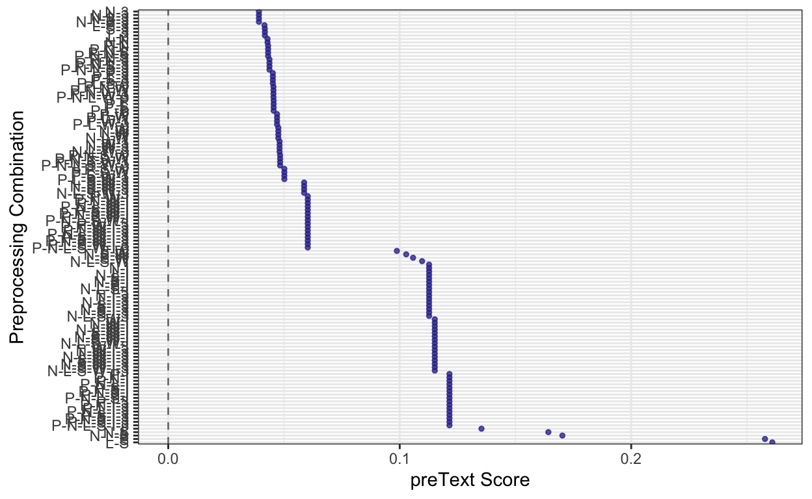

A short description of the post.
Question: For my second blog post I will be observing the content of the sub-reddit I am scraping, extracting information, and performing initial natural language processing and text analysis on it.
Navigate and describe the characteristics of the data source of your interest, if youve specified one (or plan B). The characteristics include (1) its content and/or (2) how it can be scraped. The characteristics include
and/or NLP tools in relation to your research project.
I Summon up your knowledge of some useful packages weve reviewed and/or NLP tools in relation to your research project. Sorting out adjectives? Extracting major verbs or named entities?
Explanation: My code below illustrates how I initially got my information from reddit by scraping. In this case I used RedditExtractoR. The author of this packages describes it as a minimalist r wrapper it scrapes a limited number of posts from reddit. The api on reddit itself only allows 60 requests per minute so I will have to extract the next set of data later and pick a period before my first post occured.
#top_guns_urls <- find_thread_urls(subreddit="guns", sort_by="top")
load("/Users/noahmilstein/Desktop/Spring 2022/Textasdata/text_as_data_work/df_guns.RData")
str(top_guns_urls)
top_guns_urls_df=top_guns_urls[,c("title", "date_utc", "comments")]
top_guns_urls_df
#guns_contents <- get_thread_content(top_guns_urls_df$url[1:1000])
#str(guns_contents$threads)
Explanation: Below I have processed my inital dataframe from reddit into a corpus.
Explanation: Next I used the factorial_preprocessing() command to both use n-grams processing and use an infrequent term threshold.
preprocessed_documents <- factorial_preprocessing(
top_guns_corpus,
use_ngrams = TRUE,
infrequent_term_threshold = 0.2,
verbose = FALSE)
Preprocessing 998 documents 128 different ways...names(preprocessed_documents)
[1] "choices" "dfm_list" "labels" head(preprocessed_documents$choices)
removePunctuation removeNumbers lowercase stem
P-N-L-S-W-I-3 TRUE TRUE TRUE TRUE
N-L-S-W-I-3 FALSE TRUE TRUE TRUE
P-L-S-W-I-3 TRUE FALSE TRUE TRUE
L-S-W-I-3 FALSE FALSE TRUE TRUE
P-N-S-W-I-3 TRUE TRUE FALSE TRUE
N-S-W-I-3 FALSE TRUE FALSE TRUE
removeStopwords infrequent_terms use_ngrams
P-N-L-S-W-I-3 TRUE TRUE TRUE
N-L-S-W-I-3 TRUE TRUE TRUE
P-L-S-W-I-3 TRUE TRUE TRUE
L-S-W-I-3 TRUE TRUE TRUE
P-N-S-W-I-3 TRUE TRUE TRUE
N-S-W-I-3 TRUE TRUE TRUEExplanation: Next I used preText() to pre-process the documents that I have so far to acquire pre-text scores that can give me a sense of what techniques may be necessary for natural language processing as the project develops.
#preText_results <- preText(
# preprocessed_documents,
# dataset_name = "Gun Pretext Results",
# distance_method = "cosine",
# num_comparisons = 50,
# verbose = TRUE)
Explanation Continued: Next we look at the pre-text scores with 50 comparisons, which was acquired from the code above. Below these are graphed with intercept.
load("/Users/noahmilstein/Desktop/Spring 2022/Textasdata/text_as_data_work/preText_results_gun_50_comps.RData")
preText_results
$preText_scores
preText_score preprocessing_steps
1 0.06027612 P-N-L-S-W-I-3
2 0.11514514 N-L-S-W-I-3
3 0.06027612 P-L-S-W-I-3
4 0.11514514 L-S-W-I-3
5 0.06027612 P-N-S-W-I-3
6 0.11514514 N-S-W-I-3
7 0.06027612 P-S-W-I-3
8 0.11514514 S-W-I-3
9 0.06027612 P-N-L-W-I-3
10 0.11514514 N-L-W-I-3
11 0.06027612 P-L-W-I-3
12 0.11514514 L-W-I-3
13 0.06027612 P-N-W-I-3
14 0.11514514 N-W-I-3
15 0.06027612 P-W-I-3
16 0.11514514 W-I-3
17 0.12148443 P-N-L-S-I-3
18 0.11269453 N-L-S-I-3
19 0.12148443 P-L-S-I-3
20 0.11269453 L-S-I-3
21 0.12148443 P-N-S-I-3
22 0.11269453 N-S-I-3
23 0.12148443 P-S-I-3
24 0.11269453 S-I-3
25 0.12148443 P-N-L-I-3
26 0.11269453 N-L-I-3
27 0.12148443 P-L-I-3
28 0.11269453 L-I-3
29 0.12148443 P-N-I-3
30 0.11269453 N-I-3
31 0.12148443 P-I-3
32 0.11269453 I-3
33 0.04832774 P-N-L-S-W-3
34 0.05870234 N-L-S-W-3
35 0.05016423 P-L-S-W-3
36 0.05870234 L-S-W-3
37 0.04832774 P-N-S-W-3
38 0.05870234 N-S-W-3
39 0.05016423 P-S-W-3
40 0.05870234 S-W-3
41 0.04545867 P-N-L-W-3
42 0.04809353 N-L-W-3
43 0.04701070 P-L-W-3
44 0.04809353 L-W-3
45 0.04545867 P-N-W-3
46 0.04809353 N-W-3
47 0.04701070 P-W-3
48 0.04809353 W-3
49 0.04373030 P-N-L-S-3
50 0.03917853 N-L-S-3
51 0.04519765 P-L-S-3
52 0.04158180 L-S-3
53 0.04373030 P-N-S-3
54 0.03917853 N-S-3
55 0.04519765 P-S-3
56 0.04171593 S-3
57 0.04373030 P-N-L-3
58 0.03917853 N-L-3
59 0.04519765 P-L-3
60 0.04174744 L-3
61 0.04373030 P-N-3
62 0.03917853 N-3
63 0.04519765 P-3
64 0.04174744 3
65 0.06027612 P-N-L-S-W-I
66 0.11514514 N-L-S-W-I
67 0.06027612 P-L-S-W-I
68 0.11514514 L-S-W-I
69 0.06027612 P-N-S-W-I
70 0.11514514 N-S-W-I
71 0.06027612 P-S-W-I
72 0.11514514 S-W-I
73 0.06027612 P-N-L-W-I
74 0.11514514 N-L-W-I
75 0.06027612 P-L-W-I
76 0.11514514 L-W-I
77 0.06027612 P-N-W-I
78 0.11514514 N-W-I
79 0.06027612 P-W-I
80 0.11514514 W-I
81 0.12148443 P-N-L-S-I
82 0.11269453 N-L-S-I
83 0.12148443 P-L-S-I
84 0.11269453 L-S-I
85 0.12148443 P-N-S-I
86 0.11269453 N-S-I
87 0.12148443 P-S-I
88 0.11269453 S-I
89 0.12148443 P-N-L-I
90 0.11269453 N-L-I
91 0.12148443 P-L-I
92 0.11269453 L-I
93 0.12148443 P-N-I
94 0.11269453 N-I
95 0.12148443 P-I
96 0.11269453 I
97 0.04832774 P-N-L-S-W
98 0.10967625 N-L-S-W
99 0.05016423 P-L-S-W
100 0.10577509 L-S-W
101 0.04832774 P-N-S-W
102 0.10279038 N-S-W
103 0.05016423 P-S-W
104 0.09876319 S-W
105 0.04545867 P-N-L-W
106 0.04755966 N-L-W
107 0.04701070 P-L-W
108 0.04755966 L-W
109 0.04545867 P-N-W
110 0.04755966 N-W
111 0.04701070 P-W
112 0.04755966 W
113 0.04313762 P-N-L-S
114 0.17027068 N-L-S
115 0.04553693 P-L-S
116 0.26094816 L-S
117 0.04313762 P-N-S
118 0.16421569 N-S
119 0.04553693 P-S
120 0.25780314 S
121 0.04313762 P-N-L
122 0.04289388 N-L
123 0.04553693 P-L
124 0.13531564 L
125 0.04313762 P-N
126 0.04289388 N
127 0.04553693 P
$ranked_preText_scores
preText_score preprocessing_steps
1 0.26094816 L-S
2 0.25780314 S
3 0.17027068 N-L-S
4 0.16421569 N-S
5 0.13531564 L
6 0.12148443 P-N-L-S-I-3
7 0.12148443 P-L-S-I-3
8 0.12148443 P-N-S-I-3
9 0.12148443 P-S-I-3
10 0.12148443 P-N-L-I-3
11 0.12148443 P-L-I-3
12 0.12148443 P-N-I-3
13 0.12148443 P-I-3
14 0.12148443 P-N-L-S-I
15 0.12148443 P-L-S-I
16 0.12148443 P-N-S-I
17 0.12148443 P-S-I
18 0.12148443 P-N-L-I
19 0.12148443 P-L-I
20 0.12148443 P-N-I
21 0.12148443 P-I
22 0.11514514 N-L-S-W-I-3
23 0.11514514 L-S-W-I-3
24 0.11514514 N-S-W-I-3
25 0.11514514 S-W-I-3
26 0.11514514 N-L-W-I-3
27 0.11514514 L-W-I-3
28 0.11514514 N-W-I-3
29 0.11514514 W-I-3
30 0.11514514 N-L-S-W-I
31 0.11514514 L-S-W-I
32 0.11514514 N-S-W-I
33 0.11514514 S-W-I
34 0.11514514 N-L-W-I
35 0.11514514 L-W-I
36 0.11514514 N-W-I
37 0.11514514 W-I
38 0.11269453 N-L-S-I-3
39 0.11269453 L-S-I-3
40 0.11269453 N-S-I-3
41 0.11269453 S-I-3
42 0.11269453 N-L-I-3
43 0.11269453 L-I-3
44 0.11269453 N-I-3
45 0.11269453 I-3
46 0.11269453 N-L-S-I
47 0.11269453 L-S-I
48 0.11269453 N-S-I
49 0.11269453 S-I
50 0.11269453 N-L-I
51 0.11269453 L-I
52 0.11269453 N-I
53 0.11269453 I
54 0.10967625 N-L-S-W
55 0.10577509 L-S-W
56 0.10279038 N-S-W
57 0.09876319 S-W
58 0.06027612 P-N-L-S-W-I-3
59 0.06027612 P-L-S-W-I-3
60 0.06027612 P-N-S-W-I-3
61 0.06027612 P-S-W-I-3
62 0.06027612 P-N-L-W-I-3
63 0.06027612 P-L-W-I-3
64 0.06027612 P-N-W-I-3
65 0.06027612 P-W-I-3
66 0.06027612 P-N-L-S-W-I
67 0.06027612 P-L-S-W-I
68 0.06027612 P-N-S-W-I
69 0.06027612 P-S-W-I
70 0.06027612 P-N-L-W-I
71 0.06027612 P-L-W-I
72 0.06027612 P-N-W-I
73 0.06027612 P-W-I
74 0.05870234 N-L-S-W-3
75 0.05870234 L-S-W-3
76 0.05870234 N-S-W-3
77 0.05870234 S-W-3
78 0.05016423 P-L-S-W-3
79 0.05016423 P-S-W-3
80 0.05016423 P-L-S-W
81 0.05016423 P-S-W
82 0.04832774 P-N-L-S-W-3
83 0.04832774 P-N-S-W-3
84 0.04832774 P-N-L-S-W
85 0.04832774 P-N-S-W
86 0.04809353 N-L-W-3
87 0.04809353 L-W-3
88 0.04809353 N-W-3
89 0.04809353 W-3
90 0.04755966 N-L-W
91 0.04755966 L-W
92 0.04755966 N-W
93 0.04755966 W
94 0.04701070 P-L-W-3
95 0.04701070 P-W-3
96 0.04701070 P-L-W
97 0.04701070 P-W
98 0.04553693 P-L-S
99 0.04553693 P-S
100 0.04553693 P-L
101 0.04553693 P
102 0.04545867 P-N-L-W-3
103 0.04545867 P-N-W-3
104 0.04545867 P-N-L-W
105 0.04545867 P-N-W
106 0.04519765 P-L-S-3
107 0.04519765 P-S-3
108 0.04519765 P-L-3
109 0.04519765 P-3
110 0.04373030 P-N-L-S-3
111 0.04373030 P-N-S-3
112 0.04373030 P-N-L-3
113 0.04373030 P-N-3
114 0.04313762 P-N-L-S
115 0.04313762 P-N-S
116 0.04313762 P-N-L
117 0.04313762 P-N
118 0.04289388 N-L
119 0.04289388 N
120 0.04174744 L-3
121 0.04174744 3
122 0.04171593 S-3
123 0.04158180 L-S-3
124 0.03917853 N-L-S-3
125 0.03917853 N-S-3
126 0.03917853 N-L-3
127 0.03917853 N-3
$choices
removePunctuation removeNumbers lowercase stem
P-N-L-S-W-I-3 TRUE TRUE TRUE TRUE
N-L-S-W-I-3 FALSE TRUE TRUE TRUE
P-L-S-W-I-3 TRUE FALSE TRUE TRUE
L-S-W-I-3 FALSE FALSE TRUE TRUE
P-N-S-W-I-3 TRUE TRUE FALSE TRUE
N-S-W-I-3 FALSE TRUE FALSE TRUE
P-S-W-I-3 TRUE FALSE FALSE TRUE
S-W-I-3 FALSE FALSE FALSE TRUE
P-N-L-W-I-3 TRUE TRUE TRUE FALSE
N-L-W-I-3 FALSE TRUE TRUE FALSE
P-L-W-I-3 TRUE FALSE TRUE FALSE
L-W-I-3 FALSE FALSE TRUE FALSE
P-N-W-I-3 TRUE TRUE FALSE FALSE
N-W-I-3 FALSE TRUE FALSE FALSE
P-W-I-3 TRUE FALSE FALSE FALSE
W-I-3 FALSE FALSE FALSE FALSE
P-N-L-S-I-3 TRUE TRUE TRUE TRUE
N-L-S-I-3 FALSE TRUE TRUE TRUE
P-L-S-I-3 TRUE FALSE TRUE TRUE
L-S-I-3 FALSE FALSE TRUE TRUE
P-N-S-I-3 TRUE TRUE FALSE TRUE
N-S-I-3 FALSE TRUE FALSE TRUE
P-S-I-3 TRUE FALSE FALSE TRUE
S-I-3 FALSE FALSE FALSE TRUE
P-N-L-I-3 TRUE TRUE TRUE FALSE
N-L-I-3 FALSE TRUE TRUE FALSE
P-L-I-3 TRUE FALSE TRUE FALSE
L-I-3 FALSE FALSE TRUE FALSE
P-N-I-3 TRUE TRUE FALSE FALSE
N-I-3 FALSE TRUE FALSE FALSE
P-I-3 TRUE FALSE FALSE FALSE
I-3 FALSE FALSE FALSE FALSE
P-N-L-S-W-3 TRUE TRUE TRUE TRUE
N-L-S-W-3 FALSE TRUE TRUE TRUE
P-L-S-W-3 TRUE FALSE TRUE TRUE
L-S-W-3 FALSE FALSE TRUE TRUE
P-N-S-W-3 TRUE TRUE FALSE TRUE
N-S-W-3 FALSE TRUE FALSE TRUE
P-S-W-3 TRUE FALSE FALSE TRUE
S-W-3 FALSE FALSE FALSE TRUE
P-N-L-W-3 TRUE TRUE TRUE FALSE
N-L-W-3 FALSE TRUE TRUE FALSE
P-L-W-3 TRUE FALSE TRUE FALSE
L-W-3 FALSE FALSE TRUE FALSE
P-N-W-3 TRUE TRUE FALSE FALSE
N-W-3 FALSE TRUE FALSE FALSE
P-W-3 TRUE FALSE FALSE FALSE
W-3 FALSE FALSE FALSE FALSE
P-N-L-S-3 TRUE TRUE TRUE TRUE
N-L-S-3 FALSE TRUE TRUE TRUE
P-L-S-3 TRUE FALSE TRUE TRUE
L-S-3 FALSE FALSE TRUE TRUE
P-N-S-3 TRUE TRUE FALSE TRUE
N-S-3 FALSE TRUE FALSE TRUE
P-S-3 TRUE FALSE FALSE TRUE
S-3 FALSE FALSE FALSE TRUE
P-N-L-3 TRUE TRUE TRUE FALSE
N-L-3 FALSE TRUE TRUE FALSE
P-L-3 TRUE FALSE TRUE FALSE
L-3 FALSE FALSE TRUE FALSE
P-N-3 TRUE TRUE FALSE FALSE
N-3 FALSE TRUE FALSE FALSE
P-3 TRUE FALSE FALSE FALSE
3 FALSE FALSE FALSE FALSE
P-N-L-S-W-I TRUE TRUE TRUE TRUE
N-L-S-W-I FALSE TRUE TRUE TRUE
P-L-S-W-I TRUE FALSE TRUE TRUE
L-S-W-I FALSE FALSE TRUE TRUE
P-N-S-W-I TRUE TRUE FALSE TRUE
N-S-W-I FALSE TRUE FALSE TRUE
P-S-W-I TRUE FALSE FALSE TRUE
S-W-I FALSE FALSE FALSE TRUE
P-N-L-W-I TRUE TRUE TRUE FALSE
N-L-W-I FALSE TRUE TRUE FALSE
P-L-W-I TRUE FALSE TRUE FALSE
L-W-I FALSE FALSE TRUE FALSE
P-N-W-I TRUE TRUE FALSE FALSE
N-W-I FALSE TRUE FALSE FALSE
P-W-I TRUE FALSE FALSE FALSE
W-I FALSE FALSE FALSE FALSE
P-N-L-S-I TRUE TRUE TRUE TRUE
N-L-S-I FALSE TRUE TRUE TRUE
P-L-S-I TRUE FALSE TRUE TRUE
L-S-I FALSE FALSE TRUE TRUE
P-N-S-I TRUE TRUE FALSE TRUE
N-S-I FALSE TRUE FALSE TRUE
P-S-I TRUE FALSE FALSE TRUE
S-I FALSE FALSE FALSE TRUE
P-N-L-I TRUE TRUE TRUE FALSE
N-L-I FALSE TRUE TRUE FALSE
P-L-I TRUE FALSE TRUE FALSE
L-I FALSE FALSE TRUE FALSE
P-N-I TRUE TRUE FALSE FALSE
N-I FALSE TRUE FALSE FALSE
P-I TRUE FALSE FALSE FALSE
I FALSE FALSE FALSE FALSE
P-N-L-S-W TRUE TRUE TRUE TRUE
N-L-S-W FALSE TRUE TRUE TRUE
P-L-S-W TRUE FALSE TRUE TRUE
L-S-W FALSE FALSE TRUE TRUE
P-N-S-W TRUE TRUE FALSE TRUE
N-S-W FALSE TRUE FALSE TRUE
P-S-W TRUE FALSE FALSE TRUE
S-W FALSE FALSE FALSE TRUE
P-N-L-W TRUE TRUE TRUE FALSE
N-L-W FALSE TRUE TRUE FALSE
P-L-W TRUE FALSE TRUE FALSE
L-W FALSE FALSE TRUE FALSE
P-N-W TRUE TRUE FALSE FALSE
N-W FALSE TRUE FALSE FALSE
P-W TRUE FALSE FALSE FALSE
W FALSE FALSE FALSE FALSE
P-N-L-S TRUE TRUE TRUE TRUE
N-L-S FALSE TRUE TRUE TRUE
P-L-S TRUE FALSE TRUE TRUE
L-S FALSE FALSE TRUE TRUE
P-N-S TRUE TRUE FALSE TRUE
N-S FALSE TRUE FALSE TRUE
P-S TRUE FALSE FALSE TRUE
S FALSE FALSE FALSE TRUE
P-N-L TRUE TRUE TRUE FALSE
N-L FALSE TRUE TRUE FALSE
P-L TRUE FALSE TRUE FALSE
L FALSE FALSE TRUE FALSE
P-N TRUE TRUE FALSE FALSE
N FALSE TRUE FALSE FALSE
P TRUE FALSE FALSE FALSE
FALSE FALSE FALSE FALSE
removeStopwords infrequent_terms use_ngrams
P-N-L-S-W-I-3 TRUE TRUE TRUE
N-L-S-W-I-3 TRUE TRUE TRUE
P-L-S-W-I-3 TRUE TRUE TRUE
L-S-W-I-3 TRUE TRUE TRUE
P-N-S-W-I-3 TRUE TRUE TRUE
N-S-W-I-3 TRUE TRUE TRUE
P-S-W-I-3 TRUE TRUE TRUE
S-W-I-3 TRUE TRUE TRUE
P-N-L-W-I-3 TRUE TRUE TRUE
N-L-W-I-3 TRUE TRUE TRUE
P-L-W-I-3 TRUE TRUE TRUE
L-W-I-3 TRUE TRUE TRUE
P-N-W-I-3 TRUE TRUE TRUE
N-W-I-3 TRUE TRUE TRUE
P-W-I-3 TRUE TRUE TRUE
W-I-3 TRUE TRUE TRUE
P-N-L-S-I-3 FALSE TRUE TRUE
N-L-S-I-3 FALSE TRUE TRUE
P-L-S-I-3 FALSE TRUE TRUE
L-S-I-3 FALSE TRUE TRUE
P-N-S-I-3 FALSE TRUE TRUE
N-S-I-3 FALSE TRUE TRUE
P-S-I-3 FALSE TRUE TRUE
S-I-3 FALSE TRUE TRUE
P-N-L-I-3 FALSE TRUE TRUE
N-L-I-3 FALSE TRUE TRUE
P-L-I-3 FALSE TRUE TRUE
L-I-3 FALSE TRUE TRUE
P-N-I-3 FALSE TRUE TRUE
N-I-3 FALSE TRUE TRUE
P-I-3 FALSE TRUE TRUE
I-3 FALSE TRUE TRUE
P-N-L-S-W-3 TRUE FALSE TRUE
N-L-S-W-3 TRUE FALSE TRUE
P-L-S-W-3 TRUE FALSE TRUE
L-S-W-3 TRUE FALSE TRUE
P-N-S-W-3 TRUE FALSE TRUE
N-S-W-3 TRUE FALSE TRUE
P-S-W-3 TRUE FALSE TRUE
S-W-3 TRUE FALSE TRUE
P-N-L-W-3 TRUE FALSE TRUE
N-L-W-3 TRUE FALSE TRUE
P-L-W-3 TRUE FALSE TRUE
L-W-3 TRUE FALSE TRUE
P-N-W-3 TRUE FALSE TRUE
N-W-3 TRUE FALSE TRUE
P-W-3 TRUE FALSE TRUE
W-3 TRUE FALSE TRUE
P-N-L-S-3 FALSE FALSE TRUE
N-L-S-3 FALSE FALSE TRUE
P-L-S-3 FALSE FALSE TRUE
L-S-3 FALSE FALSE TRUE
P-N-S-3 FALSE FALSE TRUE
N-S-3 FALSE FALSE TRUE
P-S-3 FALSE FALSE TRUE
S-3 FALSE FALSE TRUE
P-N-L-3 FALSE FALSE TRUE
N-L-3 FALSE FALSE TRUE
P-L-3 FALSE FALSE TRUE
L-3 FALSE FALSE TRUE
P-N-3 FALSE FALSE TRUE
N-3 FALSE FALSE TRUE
P-3 FALSE FALSE TRUE
3 FALSE FALSE TRUE
P-N-L-S-W-I TRUE TRUE FALSE
N-L-S-W-I TRUE TRUE FALSE
P-L-S-W-I TRUE TRUE FALSE
L-S-W-I TRUE TRUE FALSE
P-N-S-W-I TRUE TRUE FALSE
N-S-W-I TRUE TRUE FALSE
P-S-W-I TRUE TRUE FALSE
S-W-I TRUE TRUE FALSE
P-N-L-W-I TRUE TRUE FALSE
N-L-W-I TRUE TRUE FALSE
P-L-W-I TRUE TRUE FALSE
L-W-I TRUE TRUE FALSE
P-N-W-I TRUE TRUE FALSE
N-W-I TRUE TRUE FALSE
P-W-I TRUE TRUE FALSE
W-I TRUE TRUE FALSE
P-N-L-S-I FALSE TRUE FALSE
N-L-S-I FALSE TRUE FALSE
P-L-S-I FALSE TRUE FALSE
L-S-I FALSE TRUE FALSE
P-N-S-I FALSE TRUE FALSE
N-S-I FALSE TRUE FALSE
P-S-I FALSE TRUE FALSE
S-I FALSE TRUE FALSE
P-N-L-I FALSE TRUE FALSE
N-L-I FALSE TRUE FALSE
P-L-I FALSE TRUE FALSE
L-I FALSE TRUE FALSE
P-N-I FALSE TRUE FALSE
N-I FALSE TRUE FALSE
P-I FALSE TRUE FALSE
I FALSE TRUE FALSE
P-N-L-S-W TRUE FALSE FALSE
N-L-S-W TRUE FALSE FALSE
P-L-S-W TRUE FALSE FALSE
L-S-W TRUE FALSE FALSE
P-N-S-W TRUE FALSE FALSE
N-S-W TRUE FALSE FALSE
P-S-W TRUE FALSE FALSE
S-W TRUE FALSE FALSE
P-N-L-W TRUE FALSE FALSE
N-L-W TRUE FALSE FALSE
P-L-W TRUE FALSE FALSE
L-W TRUE FALSE FALSE
P-N-W TRUE FALSE FALSE
N-W TRUE FALSE FALSE
P-W TRUE FALSE FALSE
W TRUE FALSE FALSE
P-N-L-S FALSE FALSE FALSE
N-L-S FALSE FALSE FALSE
P-L-S FALSE FALSE FALSE
L-S FALSE FALSE FALSE
P-N-S FALSE FALSE FALSE
N-S FALSE FALSE FALSE
P-S FALSE FALSE FALSE
S FALSE FALSE FALSE
P-N-L FALSE FALSE FALSE
N-L FALSE FALSE FALSE
P-L FALSE FALSE FALSE
L FALSE FALSE FALSE
P-N FALSE FALSE FALSE
N FALSE FALSE FALSE
P FALSE FALSE FALSE
FALSE FALSE FALSE
$regression_results
Coefficient SE Variable
1 0.090581587 0.007949836 Intercept
2 -0.027904170 0.005465512 Remove Punctuation
3 -0.005555395 0.005465512 Remove Numbers
4 0.001057777 0.005465512 Lowercase
5 0.013041366 0.005465512 Stemming
6 -0.020948285 0.005465512 Remove Stopwords
7 0.039945185 0.005465512 Remove Infrequent Terms
8 -0.015944725 0.005465512 Use NGrams
Model
1 Gun Pretext Results
2 Gun Pretext Results
3 Gun Pretext Results
4 Gun Pretext Results
5 Gun Pretext Results
6 Gun Pretext Results
7 Gun Pretext Results
8 Gun Pretext ResultspreText_score_plot(preText_results)

The lowest score with intercepts according to the graph is N-3 which removes numbers, and uses n-grams. This plot represents the potential risk of using more complex pre-processing at the pre-text score goes up but may remove more information. The highest score belongs to L-S which is lowercased and stemmed which is quite risky to do.
Explanation Continued: Looking at the regression coefficients we see negative scores as usual results and positive coefficients as unusual ones. In this case removing puncuation, stopwords, and n-grams would not lead to a great deal of abnormalilty.
regression_coefficient_plot(preText_results,
remove_intercept = TRUE)
top_guns_tokens <- tokens(top_guns_corpus)
print(top_guns_tokens)
Tokens consisting of 998 documents.
text1 :
[1] "Smith" "and" "Wesson" "Saturday" "anyone" "?"
text2 :
[1] "My" "two" "favorite" "9mm" "s"
text3 :
[1] "My" "Arex" "Zero" "1" "Tactical" "w"
[7] "/" "a" "Trijicon" "RMR" "," "Viridian"
[ ... and 8 more ]
text4 :
[1] "Opinion" "of" "the" "fnx9" "?" "Already"
[7] "have" "an" "xd" "and" "a" "p320"
[ ... and 10 more ]
text5 :
[1] "Howa" "1500" "in" "." "308"
text6 :
[1] "A" "little" "before" "and" "after"
[6] "comparison" "."
[ reached max_ndoc ... 992 more documents ]top_guns_tokens_no_punct <- tokens(top_guns_corpus,
remove_punct = T)
print(top_guns_tokens_no_punct)
Tokens consisting of 998 documents.
text1 :
[1] "Smith" "and" "Wesson" "Saturday" "anyone"
text2 :
[1] "My" "two" "favorite" "9mm" "s"
text3 :
[1] "My" "Arex" "Zero" "1" "Tactical" "w"
[7] "a" "Trijicon" "RMR" "Viridian" "XL5" "Gen"
[ ... and 5 more ]
text4 :
[1] "Opinion" "of" "the" "fnx9" "Already" "have"
[7] "an" "xd" "and" "a" "p320" "m18"
[ ... and 6 more ]
text5 :
[1] "Howa" "1500" "in" "308"
text6 :
[1] "A" "little" "before" "and" "after"
[6] "comparison"
[ reached max_ndoc ... 992 more documents ]top_guns_tokens_no_punct_no_upper <- tokens_tolower(top_guns_tokens_no_punct)
print(top_guns_tokens_no_punct_no_upper)
Tokens consisting of 998 documents.
text1 :
[1] "smith" "and" "wesson" "saturday" "anyone"
text2 :
[1] "my" "two" "favorite" "9mm" "s"
text3 :
[1] "my" "arex" "zero" "1" "tactical" "w"
[7] "a" "trijicon" "rmr" "viridian" "xl5" "gen"
[ ... and 5 more ]
text4 :
[1] "opinion" "of" "the" "fnx9" "already" "have"
[7] "an" "xd" "and" "a" "p320" "m18"
[ ... and 6 more ]
text5 :
[1] "howa" "1500" "in" "308"
text6 :
[1] "a" "little" "before" "and" "after"
[6] "comparison"
[ reached max_ndoc ... 992 more documents ]top_guns_tokens_no_punct_no_upper_no_stop <- tokens_select(top_guns_tokens_no_punct_no_upper, pattern = stopwords("en"), selection = "remove")
length(top_guns_tokens_no_punct_no_upper_no_stop)
[1] 998print(top_guns_tokens_no_punct_no_upper_no_stop)
Tokens consisting of 998 documents.
text1 :
[1] "smith" "wesson" "saturday" "anyone"
text2 :
[1] "two" "favorite" "9mm" "s"
text3 :
[1] "arex" "zero" "1" "tactical" "w" "trijicon"
[7] "rmr" "viridian" "xl5" "gen" "3" "hogue"
[ ... and 2 more ]
text4 :
[1] "opinion" "fnx9" "already" "xd"
[5] "p320" "m18" "sa" "da"
[9] "interesting" "sure"
text5 :
[1] "howa" "1500" "308"
text6 :
[1] "little" "comparison"
[ reached max_ndoc ... 992 more documents ]cnlp_init_udpipe()
text_for_top_guns <- as.character(top_guns_corpus)
top_guns_corpus_2 <- docvars(top_guns_corpus)
top_guns_corpus_2$text <- text_for_top_guns
annotated.guns_corpus <- cnlp_annotate(top_guns_corpus_2)
Processed document 10 of 998
Processed document 20 of 998
Processed document 30 of 998
Processed document 40 of 998
Processed document 50 of 998
Processed document 60 of 998
Processed document 70 of 998
Processed document 80 of 998
Processed document 90 of 998
Processed document 100 of 998
Processed document 110 of 998
Processed document 120 of 998
Processed document 130 of 998
Processed document 140 of 998
Processed document 150 of 998
Processed document 160 of 998
Processed document 170 of 998
Processed document 180 of 998
Processed document 190 of 998
Processed document 200 of 998
Processed document 210 of 998
Processed document 220 of 998
Processed document 230 of 998
Processed document 240 of 998
Processed document 250 of 998
Processed document 260 of 998
Processed document 270 of 998
Processed document 280 of 998
Processed document 290 of 998
Processed document 300 of 998
Processed document 310 of 998
Processed document 320 of 998
Processed document 330 of 998
Processed document 340 of 998
Processed document 350 of 998
Processed document 360 of 998
Processed document 370 of 998
Processed document 380 of 998
Processed document 390 of 998
Processed document 400 of 998
Processed document 410 of 998
Processed document 420 of 998
Processed document 430 of 998
Processed document 440 of 998
Processed document 450 of 998
Processed document 460 of 998
Processed document 470 of 998
Processed document 480 of 998
Processed document 490 of 998
Processed document 500 of 998
Processed document 510 of 998
Processed document 520 of 998
Processed document 530 of 998
Processed document 540 of 998
Processed document 550 of 998
Processed document 560 of 998
Processed document 570 of 998
Processed document 580 of 998
Processed document 590 of 998
Processed document 600 of 998
Processed document 610 of 998
Processed document 620 of 998
Processed document 630 of 998
Processed document 640 of 998
Processed document 650 of 998
Processed document 660 of 998
Processed document 670 of 998
Processed document 680 of 998
Processed document 690 of 998
Processed document 700 of 998
Processed document 710 of 998
Processed document 720 of 998
Processed document 730 of 998
Processed document 740 of 998
Processed document 750 of 998
Processed document 760 of 998
Processed document 770 of 998
Processed document 780 of 998
Processed document 790 of 998
Processed document 800 of 998
Processed document 810 of 998
Processed document 820 of 998
Processed document 830 of 998
Processed document 840 of 998
Processed document 850 of 998
Processed document 860 of 998
Processed document 870 of 998
Processed document 880 of 998
Processed document 890 of 998
Processed document 900 of 998
Processed document 910 of 998
Processed document 920 of 998
Processed document 930 of 998
Processed document 940 of 998
Processed document 950 of 998
Processed document 960 of 998
Processed document 970 of 998
Processed document 980 of 998
Processed document 990 of 998top_guns_corpus_tokens <- tokens(top_guns_corpus)
print(top_guns_corpus_tokens)
Tokens consisting of 998 documents.
text1 :
[1] "Smith" "and" "Wesson" "Saturday" "anyone" "?"
text2 :
[1] "My" "two" "favorite" "9mm" "s"
text3 :
[1] "My" "Arex" "Zero" "1" "Tactical" "w"
[7] "/" "a" "Trijicon" "RMR" "," "Viridian"
[ ... and 8 more ]
text4 :
[1] "Opinion" "of" "the" "fnx9" "?" "Already"
[7] "have" "an" "xd" "and" "a" "p320"
[ ... and 10 more ]
text5 :
[1] "Howa" "1500" "in" "." "308"
text6 :
[1] "A" "little" "before" "and" "after"
[6] "comparison" "."
[ reached max_ndoc ... 992 more documents ]head(annotated.guns_corpus$token)
# A tibble: 6 11
doc_id sid tid token token_with_ws lemma upos xpos feats
<int> <int> <chr> <chr> <chr> <chr> <chr> <chr> <chr>
1 1 1 1 Smith "Smith " Smith PROPN NNP Numb
2 1 1 2 and "and " and CCONJ CC <NA>
3 1 1 3 Wesson "Wesson " Wesson PROPN NNP Numb
4 1 1 4 Saturday "Saturday " Saturday PROPN NNP Numb
5 1 1 5 anyone "anyone" anyone PRON NN Numb
6 1 1 6 ? "?" ? PUNCT . <NA>
# with 2 more variables: tid_source <chr>, relation <chr>head(annotated.guns_corpus$document)
doc_id
1 1
2 2
3 3
4 4
5 5
6 6doc_id_guns<-annotated.guns_corpus$document
doc_id_guns
doc_id
1 1
2 2
3 3
4 4
5 5
6 6
7 7
8 8
9 9
10 10
11 11
12 12
13 13
14 14
15 15
16 16
17 17
18 18
19 19
20 20
21 21
22 22
23 23
24 24
25 25
26 26
27 27
28 28
29 29
30 30
31 31
32 32
33 33
34 34
35 35
36 36
37 37
38 38
39 39
40 40
41 41
42 42
43 43
44 44
45 45
46 46
47 47
48 48
49 49
50 50
51 51
52 52
53 53
54 54
55 55
56 56
57 57
58 58
59 59
60 60
61 61
62 62
63 63
64 64
65 65
66 66
67 67
68 68
69 69
70 70
71 71
72 72
73 73
74 74
75 75
76 76
77 77
78 78
79 79
80 80
81 81
82 82
83 83
84 84
85 85
86 86
87 87
88 88
89 89
90 90
91 91
92 92
93 93
94 94
95 95
96 96
97 97
98 98
99 99
100 100
101 101
102 102
103 103
104 104
105 105
106 106
107 107
108 108
109 109
110 110
111 111
112 112
113 113
114 114
115 115
116 116
117 117
118 118
119 119
120 120
121 121
122 122
123 123
124 124
125 125
126 126
127 127
128 128
129 129
130 130
131 131
132 132
133 133
134 134
135 135
136 136
137 137
138 138
139 139
140 140
141 141
142 142
143 143
144 144
145 145
146 146
147 147
148 148
149 149
150 150
151 151
152 152
153 153
154 154
155 155
156 156
157 157
158 158
159 159
160 160
161 161
162 162
163 163
164 164
165 165
166 166
167 167
168 168
169 169
170 170
171 171
172 172
173 173
174 174
175 175
176 176
177 177
178 178
179 179
180 180
181 181
182 182
183 183
184 184
185 185
186 186
187 187
188 188
189 189
190 190
191 191
192 192
193 193
194 194
195 195
196 196
197 197
198 198
199 199
200 200
201 201
202 202
203 203
204 204
205 205
206 206
207 207
208 208
209 209
210 210
211 211
212 212
213 213
214 214
215 215
216 216
217 217
218 218
219 219
220 220
221 221
222 222
223 223
224 224
225 225
226 226
227 227
228 228
229 229
230 230
231 231
232 232
233 233
234 234
235 235
236 236
237 237
238 238
239 239
240 240
241 241
242 242
243 243
244 244
245 245
246 246
247 247
248 248
249 249
250 250
251 251
252 252
253 253
254 254
255 255
256 256
257 257
258 258
259 259
260 260
261 261
262 262
263 263
264 264
265 265
266 266
267 267
268 268
269 269
270 270
271 271
272 272
273 273
274 274
275 275
276 276
277 277
278 278
279 279
280 280
281 281
282 282
283 283
284 284
285 285
286 286
287 287
288 288
289 289
290 290
291 291
292 292
293 293
294 294
295 295
296 296
297 297
298 298
299 299
300 300
301 301
302 302
303 303
304 304
305 305
306 306
307 307
308 308
309 309
310 310
311 311
312 312
313 313
314 314
315 315
316 316
317 317
318 318
319 319
320 320
321 321
322 322
323 323
324 324
325 325
326 326
327 327
328 328
329 329
330 330
331 331
332 332
333 333
334 334
335 335
336 336
337 337
338 338
339 339
340 340
341 341
342 342
343 343
344 344
345 345
346 346
347 347
348 348
349 349
350 350
351 351
352 352
353 353
354 354
355 355
356 356
357 357
358 358
359 359
360 360
361 361
362 362
363 363
364 364
365 365
366 366
367 367
368 368
369 369
370 370
371 371
372 372
373 373
374 374
375 375
376 376
377 377
378 378
379 379
380 380
381 381
382 382
383 383
384 384
385 385
386 386
387 387
388 388
389 389
390 390
391 391
392 392
393 393
394 394
395 395
396 396
397 397
398 398
399 399
400 400
401 401
402 402
403 403
404 404
405 405
406 406
407 407
408 408
409 409
410 410
411 411
412 412
413 413
414 414
415 415
416 416
417 417
418 418
419 419
420 420
421 421
422 422
423 423
424 424
425 425
426 426
427 427
428 428
429 429
430 430
431 431
432 432
433 433
434 434
435 435
436 436
437 437
438 438
439 439
440 440
441 441
442 442
443 443
444 444
445 445
446 446
447 447
448 448
449 449
450 450
451 451
452 452
453 453
454 454
455 455
456 456
457 457
458 458
459 459
460 460
461 461
462 462
463 463
464 464
465 465
466 466
467 467
468 468
469 469
470 470
471 471
472 472
473 473
474 474
475 475
476 476
477 477
478 478
479 479
480 480
481 481
482 482
483 483
484 484
485 485
486 486
487 487
488 488
489 489
490 490
491 491
492 492
493 493
494 494
495 495
496 496
497 497
498 498
499 499
500 500
501 501
502 502
503 503
504 504
505 505
506 506
507 507
508 508
509 509
510 510
511 511
512 512
513 513
514 514
515 515
516 516
517 517
518 518
519 519
520 520
521 521
522 522
523 523
524 524
525 525
526 526
527 527
528 528
529 529
530 530
531 531
532 532
533 533
534 534
535 535
536 536
537 537
538 538
539 539
540 540
541 541
542 542
543 543
544 544
545 545
546 546
547 547
548 548
549 549
550 550
551 551
552 552
553 553
554 554
555 555
556 556
557 557
558 558
559 559
560 560
561 561
562 562
563 563
564 564
565 565
566 566
567 567
568 568
569 569
570 570
571 571
572 572
573 573
574 574
575 575
576 576
577 577
578 578
579 579
580 580
581 581
582 582
583 583
584 584
585 585
586 586
587 587
588 588
589 589
590 590
591 591
592 592
593 593
594 594
595 595
596 596
597 597
598 598
599 599
600 600
601 601
602 602
603 603
604 604
605 605
606 606
607 607
608 608
609 609
610 610
611 611
612 612
613 613
614 614
615 615
616 616
617 617
618 618
619 619
620 620
621 621
622 622
623 623
624 624
625 625
626 626
627 627
628 628
629 629
630 630
631 631
632 632
633 633
634 634
635 635
636 636
637 637
638 638
639 639
640 640
641 641
642 642
643 643
644 644
645 645
646 646
647 647
648 648
649 649
650 650
651 651
652 652
653 653
654 654
655 655
656 656
657 657
658 658
659 659
660 660
661 661
662 662
663 663
664 664
665 665
666 666
667 667
668 668
669 669
670 670
671 671
672 672
673 673
674 674
675 675
676 676
677 677
678 678
679 679
680 680
681 681
682 682
683 683
684 684
685 685
686 686
687 687
688 688
689 689
690 690
691 691
692 692
693 693
694 694
695 695
696 696
697 697
698 698
699 699
700 700
701 701
702 702
703 703
704 704
705 705
706 706
707 707
708 708
709 709
710 710
711 711
712 712
713 713
714 714
715 715
716 716
717 717
718 718
719 719
720 720
721 721
722 722
723 723
724 724
725 725
726 726
727 727
728 728
729 729
730 730
731 731
732 732
733 733
734 734
735 735
736 736
737 737
738 738
739 739
740 740
741 741
742 742
743 743
744 744
745 745
746 746
747 747
748 748
749 749
750 750
751 751
752 752
753 753
754 754
755 755
756 756
757 757
758 758
759 759
760 760
761 761
762 762
763 763
764 764
765 765
766 766
767 767
768 768
769 769
770 770
771 771
772 772
773 773
774 774
775 775
776 776
777 777
778 778
779 779
780 780
781 781
782 782
783 783
784 784
785 785
786 786
787 787
788 788
789 789
790 790
791 791
792 792
793 793
794 794
795 795
796 796
797 797
798 798
799 799
800 800
801 801
802 802
803 803
804 804
805 805
806 806
807 807
808 808
809 809
810 810
811 811
812 812
813 813
814 814
815 815
816 816
817 817
818 818
819 819
820 820
821 821
822 822
823 823
824 824
825 825
826 826
827 827
828 828
829 829
830 830
831 831
832 832
833 833
834 834
835 835
836 836
837 837
838 838
839 839
840 840
841 841
842 842
843 843
844 844
845 845
846 846
847 847
848 848
849 849
850 850
851 851
852 852
853 853
854 854
855 855
856 856
857 857
858 858
859 859
860 860
861 861
862 862
863 863
864 864
865 865
866 866
867 867
868 868
869 869
870 870
871 871
872 872
873 873
874 874
875 875
876 876
877 877
878 878
879 879
880 880
881 881
882 882
883 883
884 884
885 885
886 886
887 887
888 888
889 889
890 890
891 891
892 892
893 893
894 894
895 895
896 896
897 897
898 898
899 899
900 900
901 901
902 902
903 903
904 904
905 905
906 906
907 907
908 908
909 909
910 910
911 911
912 912
913 913
914 914
915 915
916 916
917 917
918 918
919 919
920 920
921 921
922 922
923 923
924 924
925 925
926 926
927 927
928 928
929 929
930 930
931 931
932 932
933 933
934 934
935 935
936 936
937 937
938 938
939 939
940 940
941 941
942 942
943 943
944 944
945 945
946 946
947 947
948 948
949 949
950 950
951 951
952 952
953 953
954 954
955 955
956 956
957 957
958 958
959 959
960 960
961 961
962 962
963 963
964 964
965 965
966 966
967 967
968 968
969 969
970 970
971 971
972 972
973 973
974 974
975 975
976 976
977 977
978 978
979 979
980 980
981 981
982 982
983 983
984 984
985 985
986 986
987 987
988 988
989 989
990 990
991 991
992 992
993 993
994 994
995 995
996 996
997 997
998 998doc_id_guns$date<-top_guns_urls_df$date_utc
annoData <- left_join(doc_id_guns, annotated.guns_corpus$token, by = "doc_id")
annoData$date<-as.Date(annoData$date)
annoData %>%
group_by(date) %>%
summarize(Sentences = max(sid)) %>%
ggplot(aes(date, Sentences)) +
geom_line() +
geom_smooth() +
theme_bw()
readability <- textstat_readability(top_guns_corpus,
measure = c("Flesch.Kincaid", "FOG", "Coleman.Liau.grade"))
# add in a chapter number
readability$post <- c(1:nrow(readability))
# plot results
ggplot(readability, aes(x = post)) +
geom_line(aes(y = Flesch.Kincaid), color = "black") +
geom_line(aes(y = FOG), color = "red") +
geom_line(aes(y = Coleman.Liau.grade), color = "blue") +
theme_bw()
annoData$date<-as.Date(annoData$date)
readability$added_dates<-as.Date(top_guns_urls_df$date_utc)
ggplot(readability, aes(x = added_dates)) +
geom_smooth(aes(y = Flesch.Kincaid), color = "black") +
geom_smooth(aes(y = FOG), color = "red") +
geom_smooth(aes(y = Coleman.Liau.grade), color = "blue") +
theme_minimal()
cor(readability$Flesch.Kincaid, readability$FOG, use = "complete.obs")
[1] 0.8007756cor(readability$Flesch.Kincaid, readability$Coleman.Liau.grade, use = "complete.obs")
[1] 0.7308223cor(readability$FOG, readability$Coleman.Liau.grade, use = "complete.obs")
[1] 0.5551364#sentimetnsdf<-get_sentiments("nrc")
#write.csv(sentimetnsdf, file = "sentimetnsdf.csv")
#save(sentimetnsdf, file="sentimetnsdf_2")
top_guns_urls_df_2<-top_guns_urls_df
top_guns_urls_df_2$text<- seq(1, 998, by=1)
nrc_joy <- sentimetnsdf %>%
filter(sentiment == "joy")
tidy_posts_for_guns <- top_guns_urls_df_2 %>%
unnest_tokens(word, title)
tidy_posts_for_guns %>%
inner_join(nrc_joy) %>%
count(word, sort = TRUE)
word n
1 love 24
2 finally 22
3 happy 18
4 fun 14
5 favorite 12
6 found 10
7 good 8
8 birthday 6
9 pretty 6
10 safe 6
11 elite 5
12 friend 5
13 baby 4
14 green 4
15 beautiful 3
16 feeling 3
17 gift 3
18 inspired 3
19 joy 3
20 pride 3
21 clean 2
22 embrace 2
23 excited 2
24 money 2
25 perfect 2
26 share 2
27 star 2
28 sunny 2
29 appreciation 1
30 art 1
31 beauty 1
32 celebrating 1
33 classics 1
34 content 1
35 create 1
36 deal 1
37 diamond 1
38 fancy 1
39 favorable 1
40 fitting 1
41 glow 1
42 god 1
43 hope 1
44 kind 1
45 laugh 1
46 liking 1
47 loving 1
48 lucky 1
49 merry 1
50 mighty 1
51 mother 1
52 music 1
53 pastry 1
54 peace 1
55 picnic 1
56 pleased 1
57 powerful 1
58 present 1
59 progress 1
60 promise 1
61 proud 1
62 respect 1
63 score 1
64 smile 1
65 special 1
66 splendid 1
67 surprise 1
68 teach 1
69 treat 1
70 wealth 1tidy_posts_for_guns_sentiment <- tidy_posts_for_guns %>%
inner_join(sentimetnsdf) %>%
count(text, sentiment) %>%
pivot_wider(names_from = sentiment, values_from = n, values_fill = 0) %>%
mutate(sentiment = positive - negative)
tidy_posts_for_guns_sentiment
# A tibble: 580 12
text trust joy positive anger anticipation disgust fear
<dbl> <int> <int> <int> <int> <int> <int> <int>
1 1 1 0 0 0 0 0 0
2 2 1 1 1 0 0 0 0
3 4 0 0 1 0 0 0 0
4 9 1 0 2 0 0 0 0
5 11 0 0 1 2 1 1 1
6 12 0 0 1 0 0 0 0
7 14 2 2 3 0 3 0 0
8 15 1 1 3 0 2 0 0
9 16 2 1 1 0 1 0 0
10 22 0 0 0 1 0 0 1
# with 570 more rows, and 4 more variables: negative <int>,
# sadness <int>, surprise <int>, sentiment <int>sentimetnsdf
# A tibble: 13,875 3
...1 word sentiment
<dbl> <chr> <chr>
1 1 abacus trust
2 2 abandon fear
3 3 abandon negative
4 4 abandon sadness
5 5 abandoned anger
6 6 abandoned fear
7 7 abandoned negative
8 8 abandoned sadness
9 9 abandonment anger
10 10 abandonment fear
# with 13,865 more rowsnrc_guns_word_counts <- tidy_posts_for_guns %>%
inner_join(sentimetnsdf) %>%
count(word, sentiment, sort = TRUE) %>%
ungroup()
nrc_guns_word_counts %>%
group_by(sentiment) %>%
slice_max(n, n = 10) %>%
ungroup() %>%
mutate(word = reorder(word, n)) %>%
ggplot(aes(n, word, fill = sentiment)) +
geom_col(show.legend = FALSE) +
facet_wrap(~sentiment, scales = "free_y") +
labs(x = "Contribution to sentiment",
y = NULL)
Explanation: Using nrc appears to have had some unintended effects that may require an analysis of the specific words used to describe sentiment. One difficult part of the data being used is that firearms, and the words used to describe them, are percieved
For attribution, please cite this work as
Milstein (2022, March 3). Noah_Milstein_Blog: Text as Data Blog Post 2. Retrieved from https://nmilsteinuma.github.io/posts/2022-03-03-text-as-data-blog-post-2/
BibTeX citation
@misc{milstein2022text,
author = {Milstein, Noah},
title = {Noah_Milstein_Blog: Text as Data Blog Post 2},
url = {https://nmilsteinuma.github.io/posts/2022-03-03-text-as-data-blog-post-2/},
year = {2022}
}